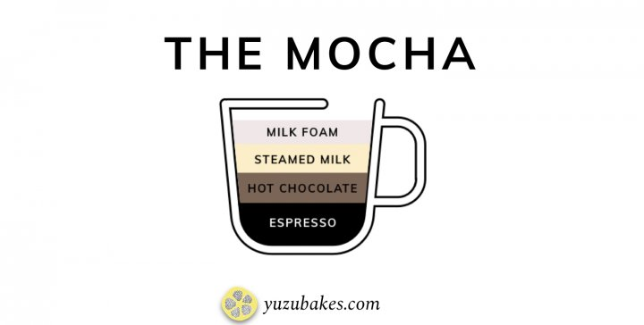

A mocha is a cross between a cappuccino and a hot chocolate. If you have a sweet tooth, then this is probably your best bet. You can find a mocha in a super simple form which is a shot of espresso topped with hot chocolate. But the more sophisticated mocha has a shot of espresso, a small part of hot chocolate (or hot chocolate syrup), topped with steamed milk and milk foam.